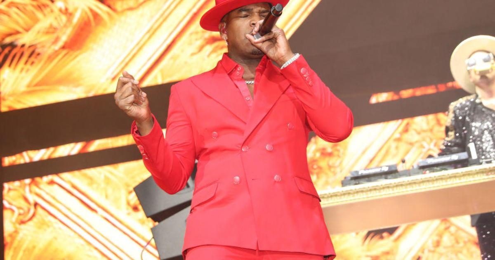

Ne-Yo apologizes for comments about parents of trans kidsNe-Yo apologizes for comments about parents of trans kids By Michele Roberts / CNN (CNN) — Ne-Yo has apologized for remarks he made about gender identity and parenting trans children. The singer posted a statement on Twitter expressing his regret over some of the things he said during a recent interview with VladTV. "After much reflection, I'd like to express my deepest apologies to anyone that I may have hurt with my comments on parenting and gender identity," the statement reads. "I've always been an advocate for love and inclusivity in the LGBTQI+ community, so I understand how my comments could've been interpreted as insensitive and offensive." During the interview, Ne-Yo said, "I just personally come from an era where a man was a man and a woman was a woman. There was two genders, and that's just how I rocked." "You could identify as a goldfish if you feel like, I don't care. That ain't my business," he added. "It becomes my business when you try to make me play the game with you. I'm not gonna call you a goldfish. But if you wanna be a goldfish, you go be a goldfish." He also commented on parents who support their children identifying as a gender that differs from their sex assigned at birth, saying, "I feel like parents have almost forgotten what the role of a parent is." "If your little boy comes to you and says, 'Daddy, I want to be a girl,'" Ne-Yo said. "And you just let him rock with that?" "If you let this 5-year-old boy decide to eat candy all day, he's going to do that," Ne-Yo added. "When did it become a good idea to let a 5-year-old, let a 6-year-old, let a 12-year-old make a life-changing decision for themselves?" Critics of Ne-Yo's remarks pointed to medical evidence that supports gender-affirming care for children and adolescents after his interview was uploaded on YouTube over the weekend. CNN has reached out to representatives for the artist for additional comment. Thanks for reading CBS NEWS. Create your free account or log in for more features. Ne-Yo apologizes for comments about parents of trans kids By Michele Roberts / CNN (CNN) — Ne-Yo has apologized for remarks he made about gender identity and parenting trans children. The singer posted a statement on Twitter expressing his regret over some of the things he said during a recent interview with VladTV. "After much reflection, I'd like to express my deepest apologies to anyone that I may have hurt with my comments on parenting and gender identity," the statement reads. "I've always been an advocate for love and inclusivity in the LGBTQI+ community, so I understand how my comments could've been interpreted as insensitive and offensive." During the interview, Ne-Yo said, "I just personally come from an era where a man was a man and a woman was a woman. There was two genders, and that's just how I rocked." "You could identify as a goldfish if you feel like, I don't care. That ain't my business," he added. "It becomes my business when you try to make me play the game with you. I'm not gonna call you a goldfish. But if you wanna be a goldfish, you go be a goldfish." He also commented on parents who support their children identifying as a gender that differs from their sex assigned at birth, saying, "I feel like parents have almost forgotten what the role of a parent is." "If your little boy comes to you and says, 'Daddy, I want to be a girl,'" Ne-Yo said. "And you just let him rock with that?" "If you let this 5-year-old boy decide to eat candy all day, he's going to do that," Ne-Yo added. "When did it become a good idea to let a 5-year-old, let a 6-year-old, let a 12-year-old make a life-changing decision for themselves?" Critics of Ne-Yo's remarks pointed to medical evidence that supports gender-affirming care for children and adolescents after his interview was uploaded on YouTube over the weekend. CNN has reached out to representatives for the artist for additional comment. for more features. Featured Local Savings More from CBS News |
 |